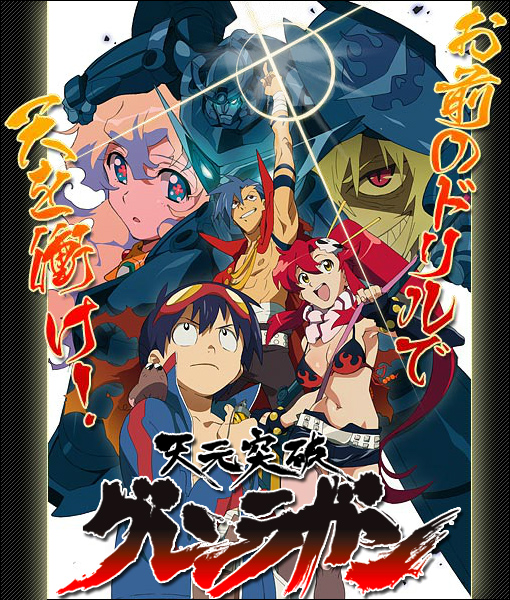
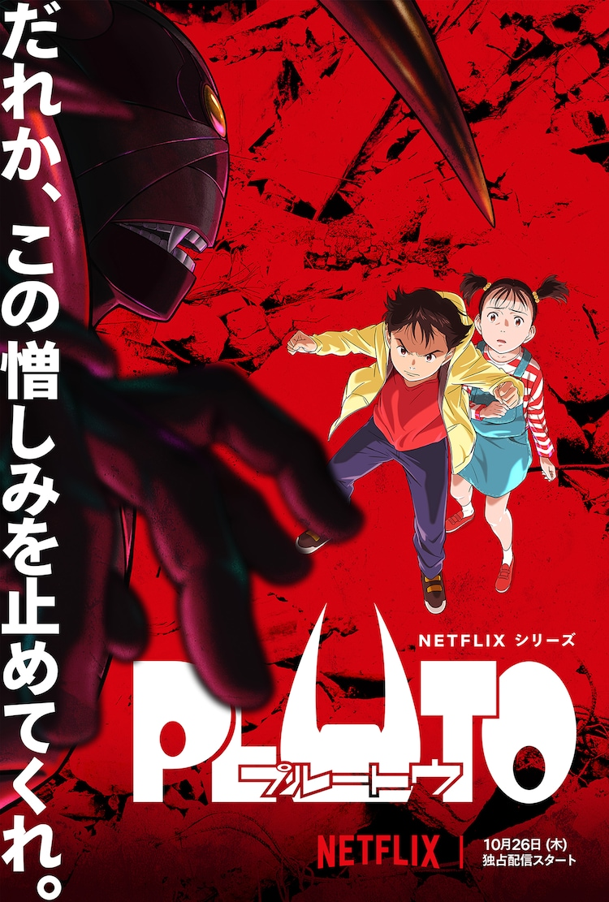

機動戦士ガンダムSEEDFREEDOM
公式サイト
「機動戦士ガンダムSEEDシリーズ」の約20年ぶりの完全新作。主人公のキラ・ヤマトたちは終わらない戦いを鎮静化するために戦う。
SSSS.GRIDMAN
公式サイト
1993年から放送されたTVシリーズ「電光超人グリッドマン」を元にしたアニメ。記憶喪失の主人公がグリッドマンに変身し、怪獣と戦う。
ぼくらの
公式サイト
鬼頭莫宏による日本の漫画で、2007年にTVアニメ化された。とんでもないことに巻き込まれてしまった15人の少年少女が、巨大ロボットに乗って戦う。
コードギアス
反逆のルルーシュ
公式サイト
2006年の10月からTVアニメが始まり、2008年4月より続編の『コードギアス 反逆のルルーシュR2』が放送された。最近では、新作の映画が公開されている。
天元突破グレンラガン

公式サイト
主人公シモンの少年から青年への成長物語を描くとともに、人類の進化を拒むアンチ・スパイラルとの銀河の覇権をかけた戦いを描いた壮大な叙事詩。
プルートゥ

公式サイト
『鉄腕アトム』の「地上最大のロボット」の話を原作として浦沢直樹がリメイクした漫画。最近アニメ化された。サスペンスとして見ても面白い。